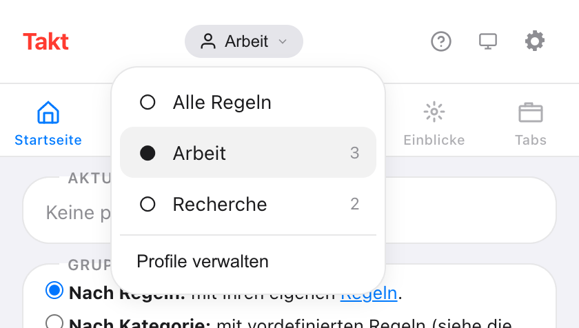
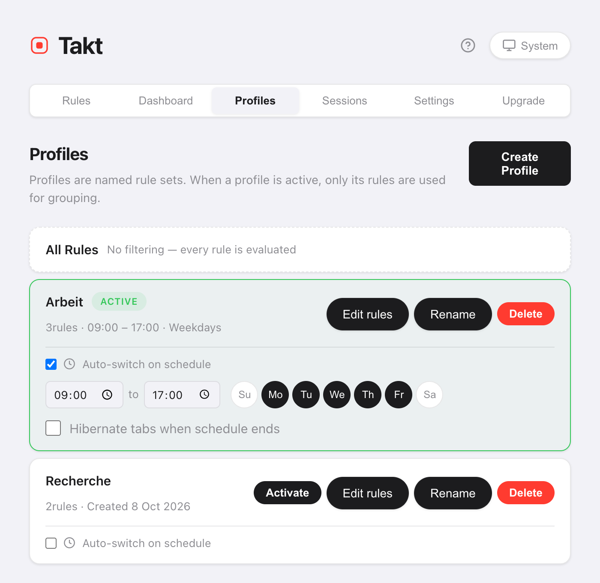

Kurz gesagt: Öffnen Sie auf der Optionsseite von Takt Profiles, legen Sie „Arbeit“ und „Privat“ an und weisen Sie jedem Regeln zu. Wechseln Sie über das Profilmenü im Popup, oder haken Sie Auto-switch on schedule an und legen Sie Uhrzeiten und Tage fest.
- Ist ein Profil aktiv, gruppieren nur seine Regeln Ihre Tabs.
- Zeitpläne richten sich nach Tageszeit und Wochentag und werden einmal pro Minute geprüft.
- Optional: Ihre Tabs hibernieren, wenn der Zeitplan endet. Premium
Warum sollte ich mehr als einen Satz Tab-Regeln wollen?
Weil eine Regel, die bei der Arbeit hilft, zu Hause im Weg ist. Eine Gruppe „Code“ für GitHub passt um 10:00 Uhr. Um 21:00 Uhr möchten Sie vielleicht lieber YouTube und Rezepte gruppiert haben und gar keine Arbeitsgruppen.
Ohne Profile haben Sie zwei Möglichkeiten: eine lange Regelliste, die alles abdecken soll, oder Regeln von Hand ein- und ausschalten. Mit Profilen behält jeder Kontext seine eigene kurze Liste.
Wie lege ich ein Profil an?
- Öffnen Sie die Optionsseite von Takt und gehen Sie zu Profiles.
- Klicken Sie auf Create Profile und geben Sie einen Namen ein.
- Kopieren Sie alle Ihre aktuellen Regeln hinein, oder beginnen Sie leer.
- Klicken Sie auf Edit rules, um die Regeln anzuhaken, die dieses Profil verwendet.
Eine neue Regel, die Sie anlegen, während ein Profil aktiv ist, wird diesem Profil automatisch hinzugefügt.
Wie wechsle ich zwischen Profilen?
Öffnen Sie das Popup und klicken Sie oben auf den Profilnamen. Das Menü listet Alle Regeln und jedes Profil mit seiner Regelanzahl auf. Wählen Sie eines, und es gilt sofort.

Alle Regeln schaltet Profile ab, sodass jede Regel ausgewertet wird. Ein Wechsel lässt bestehende Gruppen unberührt. Neue Tabs folgen den neuen Regeln; klicken Sie im Popup auf Tabs gruppieren, um den Rest neu zu gruppieren.
Wie wechsle ich Profile automatisch nach Tageszeit?
Haken Sie auf einer Profilkarte Auto-switch on schedule an. Legen Sie dann fest:
- Start- und Endzeit. Standard ist 09:00 bis 17:00.
- Tage. Schalten Sie die Tage Su bis Sa (Sonntag bis Samstag) ein oder aus. Standard ist Montag bis Freitag.
- Hibernate tabs when schedule ends (optional).

Takt prüft den Zeitplan einmal pro Minute. Beginnt das Zeitfenster, aktiviert es das Profil. Endet es, kehrt es zu Alle Regeln zurück.
Überschneiden sich zwei Zeitpläne, gewinnt das zuerst angelegte Profil.
Was bewirkt „Hibernate tabs when schedule ends“?
Am Ende des Zeitfensters hiberniert Takt Ihre offenen Tabs. Ausgenommen sind der aktive Tab, Tabs, die Audio abspielen, angeheftete Tabs und jede URL auf Ihrer Liste nie anzuhaltender Tabs.
Ihre Arbeits-Tabs belegen nach Feierabend keinen Arbeitsspeicher mehr und bleiben in der Liste hibernierter Tabs, bis Sie sie aufwecken.
Profile im Vergleich zu anderen Wegen, Arbeit und Zuhause zu trennen
| Getrennte Chrome-Profile | Takt-Profile | |
|---|---|---|
| Was getrennt ist | Alles: Fenster, Verlauf, Anmeldungen | Nur die Gruppierungsregeln |
| Dasselbe Fenster, dieselben Tabs | Nein | Ja |
| Wechselt nach Zeitplan | Nein | Ja |
Brauchen Sie getrennte Anmeldungen und Verläufe, nutzen Sie getrennte Chrome-Profile. Takt-Profile ändern nur, wie Tabs in dem Browser gruppiert werden, den Sie bereits nutzen.
Was Profile nicht tun
- Sie schließen oder öffnen keine Tabs. Ein Profil ändert, welche Regeln gelten. Um einen ganzen Satz Tabs auszutauschen, nutzen Sie Sitzungen.
- Während seines Zeitfensters hat ein Zeitplan Vorrang. Wechseln Sie in den geplanten Stunden von Hand weg, wechselt Takt bei der nächsten Prüfung zurück, innerhalb von etwa einer Minute. Schalten Sie den Zeitplan ab, um bei einem anderen Profil zu bleiben.
- Die Endzeit muss nach der Startzeit liegen. Ein Zeitfenster über Mitternacht hinaus braucht zwei Profile.
Arbeitsregeln bei der Arbeit. Heimregeln zu Hause.
Zu Chrome hinzufügen — kostenlosHäufige Fragen
Was passiert mit Regeln, die nicht im aktiven Profil sind?
Sie werden ignoriert, bis Sie zurückwechseln. Wählen Sie Alle Regeln, um wieder jede Regel zu nutzen.
Gruppiert ein Profilwechsel meine offenen Tabs neu?
Nein. Bestehende Gruppen bleiben. Neue Tabs folgen den neuen Regeln. Klicken Sie im Popup auf Tabs gruppieren, um Offenes neu zu gruppieren.
Wie oft prüft Takt den Zeitplan?
Einmal pro Minute. Ein Profil schaltet sich innerhalb von etwa einer Minute nach seiner Startzeit ein und innerhalb von etwa einer Minute nach seiner Endzeit aus.
Sind Profile kostenlos?
Nein. Profile und Zeitpläne sind Premium, $3/Monat oder $30/Jahr. Der kostenlose Plan umfasst 5 Regeln und regelbasiertes Gruppieren.